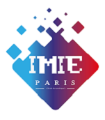

ÉCOLE & ENTREPRISE
🎓 Mon École — IMIE Paris
J'effectue actuellement mon cursus en BTS SIO (Services Informatiques aux Organisations), option SLAM (Solutions Logicielles et Applications Métiers), au sein de l'IMIE Paris, une école d'informatique située proche de la capitale.
L'IMIE propose un modèle basé sur la pédagogie par projets, permettant aux étudiants de se confronter à des cas concrets en lien avec les réalités de l’entreprise. Grâce à cet environnement dynamique, je développe à la fois mes compétences techniques, méthodologiques, et mon sens du travail en équipe.
Compétences développées à l'IMIE :
- Développement web (HTML, CSS, JavaScript, PHP)
- Programmation orientée objet (Java, PHP)
- Gestion de bases de données (MySQL, WAMP)
- Modélisation et conception (UML, JMerise, UI/UX)
- Culture professionnelle et veille technologique

🏢 Mon Entreprise — Grand Orient de France (GODF)
En alternance, j'occupe le poste de technicien support informatique au sein du Grand Orient de France, une institution historique et culturelle, située à Paris.
Intégré à l’équipe du service informatique, je participe activement au bon fonctionnement du parc informatique, à la gestion des incidents utilisateurs, ainsi qu’à l’évolution des systèmes. Cette expérience m’apporte une vraie maîtrise des outils professionnels et un regard concret sur les enjeux du numérique en entreprise.
Principales missions réalisées :
- Administration de la base de données et du parc informatique
- Assistance technique aux utilisateurs,
- Diagnostics et résolutions des problèmes matériels et logistiques
- Configuration et installation des logiciels et périphériques informatiques
- Maintenance préventive des équipements informatiques
- Formation des utilisateurs sur l’utilisation des logiciels et des systèmes